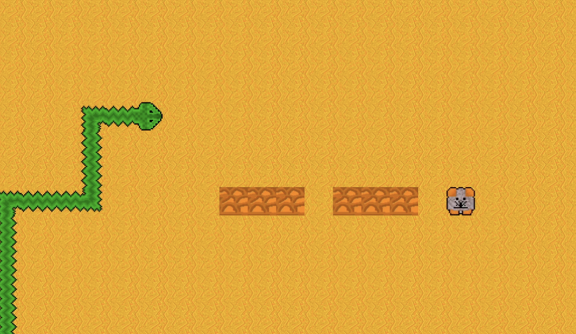

whoami
I am a computer science Master's student at the University of Ljubljana. I have a passion for software development and enjoy tackling complex problems with innovative solutions. Here are some of the projects I've worked on besides my studies that I found fun and rewarding to build.
My Projects
Automated wordle solver
An automated solver for the popular word game Wordle. I downloaded the list of all possible words and implemented a strategy to guess the correct word in as few attempts as possible. The solver scores letter based on their frequency in the list of possible words and uses the feedback from each guess to narrow down the possibilities. Logic is simple but it does the job done in an average of 4 attempts. I used github actions to schedule the solver to run daily and save the results. Later I made a quick summary of the results you can see in the picture. I also wanted to implement solver in prolog because of its pattern matching nature but never got around to it.
Snake Game

I programed a simple game of snake in Java. I learned about the game loop, drawing screen and collision detection logic. I had a lot of fun designing how the game looks like. All tiles and snake parts are drawn by me.
Database manager application

A simplle database manager built in Java and Angular. I wanted to recreate a tool I used and add some of my own features. Witht his project the focus was in developing a REST Applicationm and stick to its principles. I designed a database schema and implemented the necessary CRUD operations. I learned about API calls conected them to font end design and ORMs. Then created a docker file so it can run in containers.